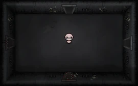
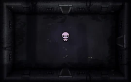
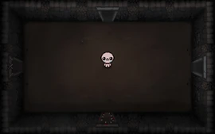
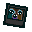

MOM

esse chefe pode ser encontrado nos andares:
- Depths II
- dank Depths II
- Necropolis II



este é o primeiro chefe final que você enfrentara em sua jornada, sendo que quando derrotada, o jogo termina, abrindo assim mais dois andares pra sua proxima jornada
esse chefe é dividido de dois modos, um deles é o pé, que de tempo em tempo aparece em cima de isaac pra esmagalo, causando um coração inteiro de dano. o chefe também coloca algumas partes pra fora das portas, sumonando algum inimigo para atrapalhar isaac. nessas duas situações é pocivel causar dano no chefe
esse chefe também tem duas variantes, quando o chefe se encontra com uma coloração azulada, ela tende a sumonar mais inimigos para atrapalhar. quando se encontra com uma coloração vermelhada, ela tende a pisar mais em isaac
esse chefe também pode aparecer nos andares alternativos, sendo eles:
- Mausoleum II
- Gehenna II


nesses andares, os inimigos sumonados pelo chefe são mais fortes, e toda vez que aparecer um olho de uma das portas, soltara da direção que estiver olhando, um lazer que atraveça até o outro lado da sala
depois de matar o pé da mãe pela primeira vez, passará a te dar um item aleatório de chefe, porem, se um dos itens polaroid ou negative estiver desbloqueado, o chefe obrigatoriamente deixara pra pegar um dos dois, podendo escolher apenas um deles

ao matar esse chefe em menos de 20 minutos, você liberará pra enfrentar o boss rush. caso isso seja nos andares alternativos, você terá 25 minutos